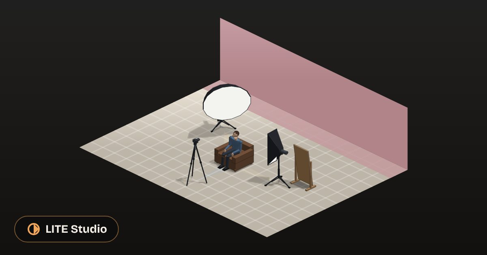
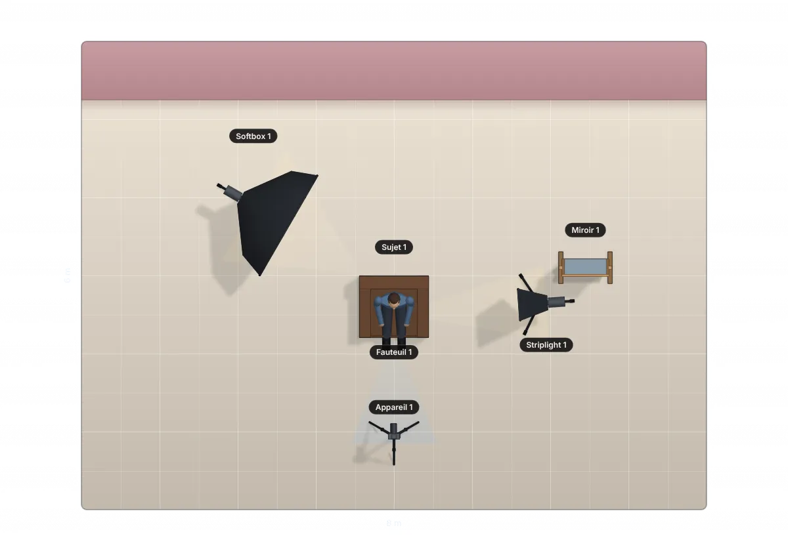
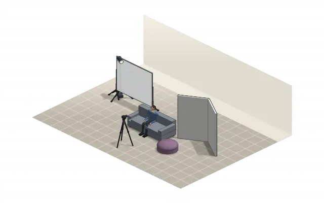
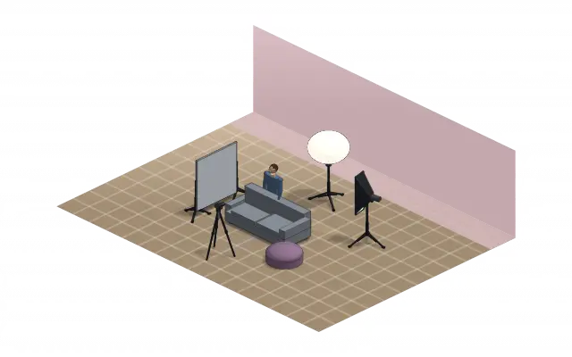

بودوار بارابوليك
كرسي بذراعين 90 cm وكاميرا حامل مرتفع وسوفت بوكس Parabolique 150 وستريب لايت 40 x 140 +1
- 6 عناصر
- بودوار
- استوديو 8 × 6 م


المعدات 5
الالتقاط
- 1 ×كاميرا حامل مرتفع70 x 86 cm
الإضاءة
- 1 ×سوفت بوكس Parabolique 150
- 1 ×ستريب لايت 40 x 140
الأثاث
- 1 ×كرسي بذراعين 90 cm90 x 80 cm
- 1 ×مرآة واقف60 x 170 cm
افتح الإعداد لتحريك المعدات وقياس المسافات وطباعة ورقة موقع التصوير.
في الفئة نفسها

بودوار نافذة ناعمأريكة 180 cm وكاميرا حامل قياسي وإطار ديفيوجن 200 x 200 وCOB LED 600 W +2 بودوار كرسي بذراعين لو كيكرسي بذراعين 90 cm وكاميرا حامل قياسي ومظلة فضية 150 cm ونيغاتيف فيل 120 x 200 +1
بودوار كرسي بذراعين لو كيكرسي بذراعين 90 cm وكاميرا حامل قياسي ومظلة فضية 150 cm ونيغاتيف فيل 120 x 200 +1
بودوار لانترن لاونجأريكة 180 cm وكاميرا حامل قياسي ولانترن 90 cm وستريب لايت 30 x 120 +2